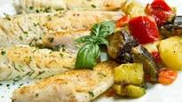

Filé de merluza com batata ao forno

Ingredientes:
- 8 filés de merluza
- 4 batatas cruas (em rodelas, sem casca)
- 1 pimentão (cortado em rodelas)
- 2 tomates (cortados em rodelas - as sementes ficam à preferência)
- 1 cebola (cortada em rodelas)
- Molho de tomate de boa qualidade
- Orégano
- Azeite para untar
- Tempere os filés à seu gosto e reserve por 10 minutos.
- Unta um refratário com azeite e faça uma camada de batata, em seguida arrume os filés sobre a batata.
- Acrescente a cebola, o tomate, o pimentão, orégano a gosto, regue com o molho de tomate (1/2 lata).
- Cubra com o restante das batatas. Cubra com papel alumínio e leve ao forno alto até que as batatas fiquem macias.